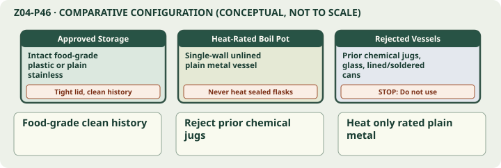

Z04-P46 · Water · Adapted historical material
Reject incompatible, chemical-residue or unrated water vessels
Prevent chemical leaching, breakage and heat failure by screening container materials before storage or boiling.
When it applies · Selecting emergency storage jugs, field canteens and cooking vessels in household or improvised settings.
Equipment · Marked food-grade containers (e.g., HDPE/food-safe plastic or food-grade stainless steel) and permanent marker for labeling.

Actions
- Reject any jug, drum or bottle that previously stored fuel, pesticides, motor oil, pool chemicals, paint or industrial cleaners—trace residues cannot be washed out reliably.[W06, W13, W01]
- Avoid glass containers for emergency water storage or transport because breakage causes sudden water loss and injury; reject degraded brittle plastic jugs.[W06, W13]
- Never heat or boil water in lined, painted, soldered, unknown-alloy or plastic containers not expressly rated by the manufacturer for direct heat.[W01, W02, ED]
Failure recognition · Storing drinking water in a rinsed windshield-washer jug or boiling water inside an epoxy-lined aluminum bottle or unknown salvaged can.[W06, W01, ED]
Verify · Confirm every storage vessel is food-grade with known clean history and every boiling pot is plain, unlined, heat-rated metal.[W06, W02, ED]
Stop or change course · When no verified safe vessel exists for boiling or storage, rely on sealed commercial water or seek assistance rather than heating unknown containers.[W01, W06, W09]
Evidence and editorial notes
- W01 · CDC · How to Make Water Safe in an Emergency (2024-09-19)
- Section: Water with fuel or toxic chemicals in it · Conditions: Suspected fuel, toxic chemicals or radioactive contamination
Support: Use a different safe supply. Standard boiling and microbial disinfection do not make this water safe.
Limitations: Does not list contaminant-specific lab remediation; applies to emergency consumer decisions only. · Conflicting evidence: None across CDC/EPA emergency guidance.
Editorial note: Used as upstream hard-stop gate prior to any field treatment card. · Specialist reviewer: Drinking-water safety and public health
Primary source · checked 2026-11-24 - W02 · CDC · How to Make Water Safe in an Emergency (2024-09-19)
- Section: Boil > Steps for boiling water · Conditions: Microbiologically suspect water with acceptable chemical source; portable heat and safe vessel
Support: Clarify cloudy water first. Rolling boil for one minute; above 6,500 feet for three minutes. Cool and cover in sanitized containers.
Limitations: Does not remove dissolved metals, nitrates, fuel, or cyanotoxins. · Conflicting evidence: Older Track B B009 omitted the 6,500 ft threshold; CDC threshold governs.
Editorial note: Require explicit timer verification after rolling boil starts. · Specialist reviewer: Drinking-water safety and public health
Primary source · checked 2026-11-24 - W06 · CDC · How to Create an Emergency Water Supply (current web edition)
- Section: How to store emergency water; Safe storage containers · Conditions: Potable water intended for emergency storage
Support: Prefer sealed commercial water or clean food-grade tight-closing containers. Avoid containers that held toxic chemicals.
Limitations: Container shelf durability and rotation depend on plastic/material type and storage heat. · Conflicting evidence: None; reinforces strict raw-vs-clean segregation.
Editorial note: Used to enforce labeling and dedicated raw/potable vessel separation. · Specialist reviewer: Drinking-water safety and public health
Primary source · checked 2026-11-24 - W09 · CDC · Water Treatment Options When Hiking, Camping, or Traveling (current web edition)
- Section: Overview and water treatment methods · Conditions: Hiking or camping where no safe source is confirmed
Support: Even clear water can contain germs. Assess the supply and carry safe water or an appropriate treatment method.
Limitations: Visual clarity never detects microbes or dissolved chemical contaminants. · Conflicting evidence: None across CDC/NPS/EPA sources.
Editorial note: Reinforces clarity-is-not-potability invariant across all Z04 cards. · Specialist reviewer: Drinking-water safety and public health
Primary source · checked 2026-11-24 - W13 · CDC · How to Clean and Sanitize Water Storage Containers (current web edition)
- Section: How to Clean and Sanitize Water Storage Containers · Conditions: Reusable food-grade water storage containers before filling with potable water
Support: Wash with dish soap and warm water, sanitize interior surfaces with a labeled dilute bleach solution for at least 30 seconds, and rinse with safe water before filling.
Limitations: Damaged, cracked, or chemical-contaminated containers cannot be rehabilitated by washing. · Conflicting evidence: None; complements CDC-S container rules.
Editorial note: Separates routine washing from sanitizing and air-drying/rinsing. · Specialist reviewer: Drinking-water safety and public health
Primary source · checked 2026-11-24
Source lineage · CDC storage containers and B009 vessel limits; new manuscript · Classification · Adapted historical material.